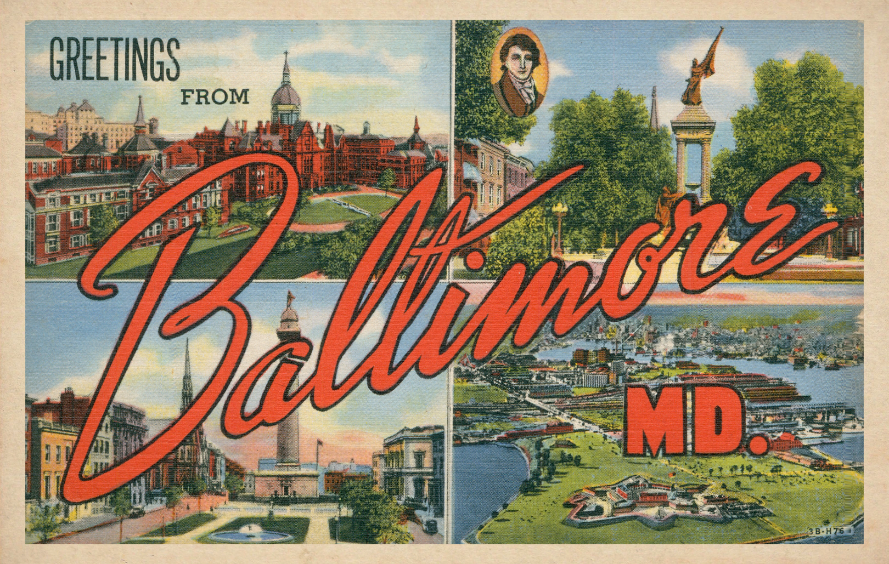
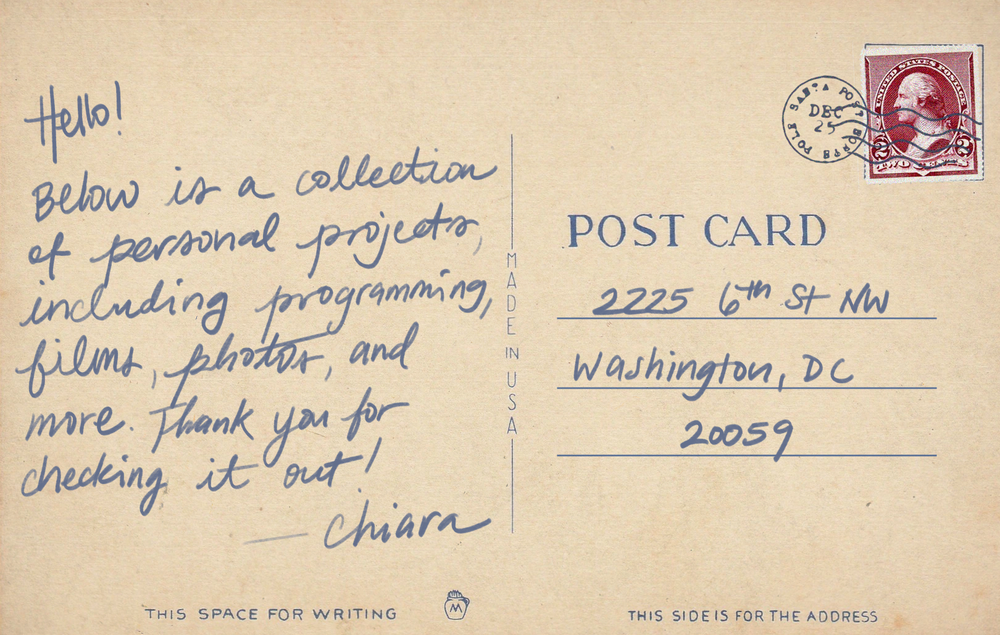
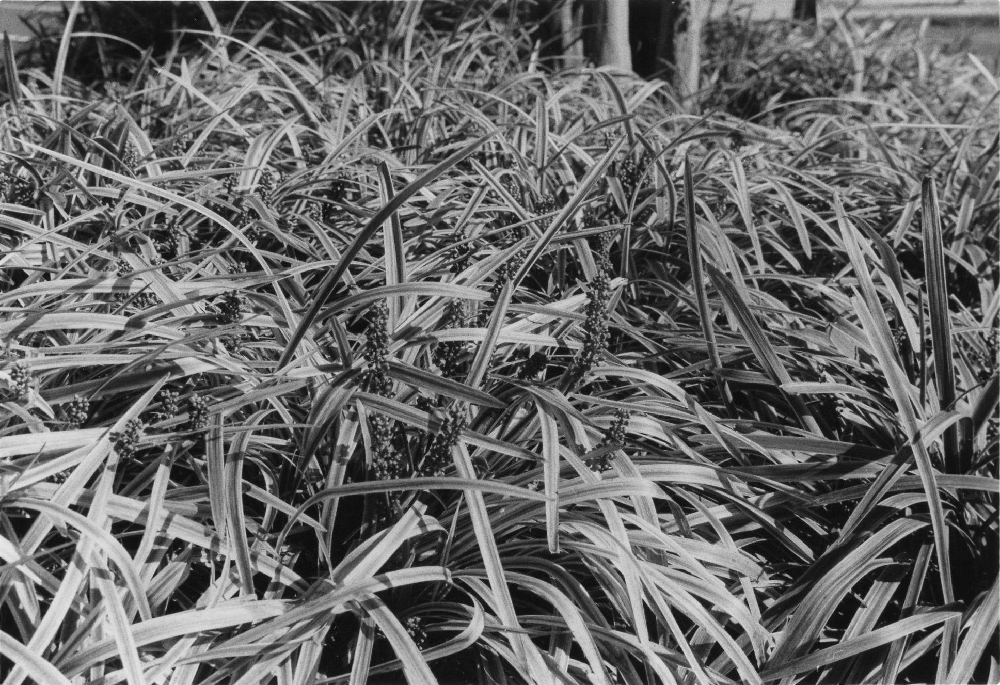

my name is chiara adjoh-davoh and i am currently a sophomore at howard university, majoring in computer science and minoring in film & television. i'm from baltimore, maryland and currently live in washington, dc. my hobbies aside from coding and film include painting, knitting, sewing, film photography, and collaging.
feel free to contact me at cdavoh2247@gmail.com for any inquires.
languages: html, css, javascript
this project fufills a long time goal of mine, which is to get comfortable enough with frontend development to create my own portfolio site. in the past, i've used sites like carrd, google sites and wix to create portfolios, but those builders have a lot of limits on what your finished site can look like. i really wanted the flexibility to make my site as creative as i wanted it to be, so i enrolled in a web developement course at howard. after learning enough about front end development to where i felt comfortable, i started programming this site, which is coded 100% by hand and hosted using github pages. if you'd like to check out my source code, here is my github repo.
languages: python, javascript
awards: bisonhacks 2025 climate challenege winner, third place overall
created as part of 2025's bisonhacks competition, a 24-hour hackathon hosted by howard university, policypulse seeks to offset the climate impact of generative artifical intelligence, using machine learning. policy pulse uses locally trained ai to predict the climate impact of policies and bills, using older policies as a blueprint. its intended use is for lawmakers, lobbyists, and anyone who has a hand in dictating government policy. if you'd like to learn more, check out our devpost.
language: MIPS assembly
while i've spent most of my time coding using high-level languages like c++, python, and javascript, part of my computer organization 1 course was learning how to use an assembly language, like mips, to code. assembly languages are low-level languages that use little to no abstraction. in assembly, every line of code is a very specific instruction for what the computer should be doing in the memory. a single line of code is a single instruction, unlike high-level languages where a single line of code can be many instructions to the computer's memory. it was an incredibly interesting experience and i'm incredibly proud of my short, but challenging project, which prints the fibonacci sequence. you can check it out in my github repo. i highly suggest you look at the .s file!
language: python (pandas & numpy)
as part of my intro to data analysis class, i was tasked with investigating a social issue and using python to represent the data visually. i choose the global housing crisis, and through a myriad of data analysis techniques, came to several conclusions about the effect of covid-19 on housing availability and price uptakes. this project was something that i hold very near and dear to my heart. both the paper and all of the jupyter notebook files are in my github repo.
languages: python, bash, vi editor
this project was part of my linux lab course, in which we learned about bash commands and the vi editor. while this project's file is simply a python file, the file itself was coded using bash's vi editor in my computer's terminal, rather than through an IDE like vscode. while the code itself is only a few lines, it was a fun and streneous process using the vi editor to write it. in the process, i learned a ton about how bash and the command line work.
language: c++
even though most of my larger projects have used other languages, c++ has been my main language of choice for several years now. i've compiled a few of the projects i've completed in this github repo. i've gotten very familiar with recursion, object oriented programming, and linked lists, with many more topics to learn as i continue working my way through my c++ courses.
role: underclassmen representative ('24-'25), director of finance ('25-'26)
the howard university film organization, also known as HUFO, is our school's biggest organization for the proliferation of black filmmaking. i've been a member of the org since my freshman year, and worked on the executive board for about as long. this org has defined much of my life in college, and i've had the chance to work on so many projects as a result including...
i've also been a member of the organization's executive board since my freshman year, working as an underclassmen representative, where i learned the ins and outs of the organization, as well as currently the treasurer, where i manage funds for our events.
awards: youngarts '24 winner for film/experimental, scholastics art & writing awards regional gold key & national silver medal, american visions nominee, baltimore film expo first place for film/experimental
director, writer and editor
created as a film assignment and inspired by the works of gillian wearing. gillian is a conceptual artist who's most well known series of works asks strangers to write down what they're currently thinking and hold it up for a photo. in a similar fashion, i asked strangers what they were currently thinking and asked them to write it down. the responses were then collected, scanned, and digitally collaged with my own assortment of images and videos. the whole is greater than the sum of its parts.
director, writer and editor
done as a film assignment after watching the tv show, pen15--primarily directed by sam zvibleman. the dreamlike feeling of the show, taking place in the early 2000s and based on the creators'--maya erskine and anna konkle--childhoods was of major inspiration when choosing my documentary topic and editing this intro. while the full documentary is currently scrapped, this short introduction sets up the topic at hand--my hometown and childhood. the photo collage element was brought back during sum of its parts.
awards: scholastics art & writing awards regional silver key winner

using black and white film development techniques in practice since the 1800s, these photos were developed as a way to practice completing the entirety of the film development process, from taking the photos to developing the negatives to enlarging them in the darkroom. weeks of experimentation and practice went into creating these prints, a special type of labor that sucks the soul of the artist into the work. in continuation of usual themes, these photos sought to give ordinary objects an unfamiliar, striking appearance. these photos should tickle the viewer.